NT第七課 第57-63步 再潔淨聖殿 - 五百多證人
課程簡介：本課涵蓋基礎聖經內容，幫助學習者理解歷史或教義。
課程內容
前言
介紹課程的核心概念，請記錄筆記。
第七課: 第57-63 步
第五十七步 再潔淨聖殿
動作：一隻手豎起兩隻手指，一隻手像揮舞著皮鞭
經文：
l 太 21:12-13 耶穌進了神的殿，趕出殿裏一切作買賣的人，推倒兌換銀錢之人的桌子，和賣鴿子之人的凳子；13 對他們說：“經上記著說：‘我的殿必稱為禱告的殿；你們倒使它成為賊窩了。’”
問題：
根據太 21:12-13，耶穌在聖殿做什麼？祂為什麼要這樣做？
解釋：
耶穌第二次將兌換銀錢的人和做買賣的人趕出聖殿。從中我們最少可以觀察到兩件事情：
1. 領袖們沒有學到功課。他們沒有悔改，沒有改變心態。耶穌第一次潔淨聖殿之後就離開了耶路撒冷，領袖們隨即又回到聖殿中做買賣，就像什麼事也沒有發生過一樣。領袖們對耶穌所作的事情沒有放在心上。因此，他們沒有學到神要他們學的功課。
2. 耶穌愛世上所有的人。為什麼耶穌要潔淨聖殿？請看耶穌引用的兩句舊約經文。
第一句取自以賽亞書56 章7 節（請現在就參看這一節）。這節經文指出，外邦人將會在千禧年國度裏來到耶路撒冷敬拜耶和華，聖殿將會是世上萬民敬拜神的地方。但耶穌時代的猶太人很不重視外邦人對耶和華的敬拜，他們覺得神只愛猶太人。因此他們認為，在聖殿留一大片地方給外邦人敬拜，是浪費地方。他們忽視了一件重要的事情：神對萬國萬民的愛永不止息，祂一直不斷地尋找、呼召和賜福給他們（請現在就看創12:2-3；詩47:7、9 和詩67:1-2）。
（另參創 18:18, 22:1-18, 26:3-4；詩72:17, 86:9, 87:6, 96:7-13, 98:3, 102:15-16,145:9；賽9:2-3, 11:9-10, 12:2-5, 19:21-25, 24:14-16, 45:22, 49:6, 59:19, 61:11, 62:7,66:19-20；耶4:2, 13:11, 22:3, 33:9；結36:20-23, 39:22-23；但7:13-14；摩9:7；番3:9-10；亞2:11, 8:13、22, 9:10, 14:9；瑪1:11、14, 3:12 及《舊約精覽》第二部分第二課。）
耶穌引用的第二句經文來自耶利米書7 章11 節（請現在就參看耶7:9-11）。耶穌用“賊窩”這個詞語，充分反映領袖們是多麼的貪婪好利。祂更指出他們用聖殿來結黨營私。他們將神名下的殿變為罪惡的溫床、犯罪的樂園。但神一直在看著他們的所作所為！
默想：
當你相信和承認耶穌是你的救主時，你的身體便成了永生神的殿（林前3:16,6:19）。你怎樣用你的“殿”呢？是作為祝福別人的媒介？還是表現貪婪的地方？你將你的身體用作義的器具還是不義的器具（羅6:13）？你用“神的殿”去安慰別人還是埋怨別人？你最近用這殿來做什麼？你有沒有以它為禱告的殿？
第五十八步 最後晚餐
動作：做撕開麵包的動作用雙手的拇指和食指做撕開麵包的動作。
經文：
l 太 26:26-28 他們吃的時候，耶穌拿起餅來，祝福，就掰開，遞給門徒，說：“你們拿著吃，這是我的身體。”27 又拿起杯來，祝謝了，遞給他們，說：“你們都喝這個，28 因為這是我立約的血，為多人流出來，使罪得赦。”
問題：
1. 根據太 26:26-28，耶穌說那餅是什麼？那杯是什麼？
解釋：
最後晚餐的過程：
1. 吃飯前，耶穌先為門徒洗腳（約 13:1-20）。
2. 耶穌指出猶大是賣祂的人（可14:18-21；太26:21-25；路22:21-23；約13:21-30）。
3. 耶穌給他們相愛的新命令（約 13:31-35）。
4. 門徒都說不會離棄耶穌（可14:27-31；太26:31-35；路22:31-38；約13:36-38）。
5. 耶穌設立紀念祂的餅和杯（聖餐）（可14:22-25；太26:26-29；路22:17-20；林前11:23-26）。
6. 耶穌臨別贈言（約 14 章）。
7. 耶穌和門徒前往客西馬尼園，途中繼續祂的話（約 15-16 章）。
8. 耶穌為門徒禱告（約 17 章）。
耶穌和門徒吃了最後的逾越節晚餐。逾越節本來是為紀念以色列人從為奴之地—— 埃及得釋放，但耶穌卻給了它一個新的意義，就是使人從罪中得釋放。在舊約裏，神為了拯救以色列人離開埃及，吩咐百姓將羔羊的血塗在門楣和門框上，好讓殺長子的天使越過他們的家。現在，神羔羊的血是塗在每個信徒的心門上，完全滿足了神公義的標準，讓神的審判可以越過我們。
逾越節
猶太人吃逾越節晚餐的時候，會有幾次祝酒。第一次祝酒稱為成聖的杯，第二次祝酒是讚美的杯，第三和第四次祝酒分別是救贖的杯和以利亞的杯。根據傳統，第三次祝酒之前會先吃一種特別的食物。那是一塊特別留起來的餅，吃的時候將它掰開兩半，其中一半用布包著藏起來。那是一幅代表基督的美麗圖畫—— 祂的身體被殘害、被埋葬。也許這就是耶穌拿起來祝福，說“這是我的身體”的餅。
吃完餅後，耶穌拿起杯來。這是第三次祝酒，救贖的杯，祂拿起來說：“這是我立約的血。”祂說這杯是祂的血；祂流出來的血能救贖萬民。
第四次祝酒的時候，會有一張空椅子留給以利亞，他會宣告彌賽亞到來。根據猶太人的傳統說法，以利亞會在逾越節來到。所以當猶太人吃逾越節晚餐的時候，有人會開門往外看，看看以利亞有沒有來，然後說：“今年不來，也許明年會來。”現在我們當然知道，“以利亞”其實已經來了—— 他是以施洗約翰的身份到來的。
耶穌和門徒吃最後的晚餐，沒有提及第四個杯，也沒有提及傳統上留給以利亞的那張椅子。
耶穌說那餅是“祂的身體”，那杯是“祂的血”，祂的意思不是說那餅實質上變成了祂的身體，也不是說那杯酒真的變成了祂的血。祂用的是比喻的手法，就像祂說“我就是門”（約10:9）一樣。
默想：
哥林多前書 5 章7 節說：“你們既是無酵的面，應當把舊酵除淨，好使你們成為新團；因為我們逾越節的羔羊基督已經被殺獻祭了。”我們信祂的人已經將祂的血塗在我們的心門上；我們是屬祂的。因此我們必須除去舊酵（生命裏的罪），好讓我們能活出應有的生命，作神聖潔的子民。只要一點點的酵便能使全團面發起來；只要我們生命裏藏有一點點的罪，我們便會發現這一點點的罪能影響我們整個生命。無論你犯了這罪多久，無論除去這罪有多難，不要猶豫，快把它除去！
第五十九步 被抓被打
動作：雙手像被綁著雙手交叉互握在一起，像被捆綁著一樣。
經文：
l 可 14:44-46 賣耶穌的人曾給他們一個暗號，說：“我與誰親嘴，誰就是他。你們把他拿住，牢牢靠靠地帶去。”45 猶大來了，隨即到耶穌跟前說： “拉比，”便與他親嘴。46 他們就下手拿住他。
問題：
根據可 14:44-46，賣耶穌的人用什麼暗號指出誰是耶穌？
解釋：
吃過逾越節的晚餐後，耶穌退到祂常到的客西馬尼園（可14:32-42）。祂在園裏禱告、哭泣，汗如血點滴在地上（路22:44）。那是一場抗拒試探的大戰。在這個園中，耶穌像祂往常一樣，學習了順服。祂既學習了順服，就成了完美的永恆救恩泉源，也成為我們永遠的大祭司（來5：7-10）。
在伊甸園中，首先的亞當敵不過試探，罪就從此進入了世界，同時也帶來了死亡。在客西馬尼園裏，末後的亞當勝過了試探，祂的得勝帶來了罪的赦免，更戰勝了死亡。真是何等奇妙的救主！
當時門徒一點也不知道一場爭戰已經展開。他們內心並無催迫感。只因為耶穌吩咐他們要禱告，他們也就嘗試禱告，可是他們都無心禱告，結果睡著了。今天我們是否像這些門徒一樣，完全不察覺一場激烈的屬靈爭戰正在進行？我們是否帶著迫切感、懇切地禱告？抑或只是沒精打采、隨隨便便地禱告？耶穌囑咐我們要警醒禱告（太 26:41；可13:33；路21:36）。不要再昏睡了，倒要行在光明中（帖前5:6-10）。
猶大隨後帶著兵丁來，用親嘴作暗號指出誰是耶穌，讓兵丁捉拿祂。門徒憑微小的力量並不能保護耶穌，耶穌也很快阻止了他們。耶穌被抓後，門徒四散逃走，離棄了耶穌。耶穌說這是領袖們隨罪性而行的時刻，因為他們都被黑暗的勢力擄去了（路 22:53）。
默想：
神答應過保守我們，但祂容許苦難來到。有時祂會容許惡人在我們身上做惡事。
難道神忘記了祂應許過要保守我們嗎？不！祂會用祂大能的手來保護我們，祂必看顧我們。但神有時會讓我們跟隨救主的路徑；有時我們必須跟隨很多前人走過的腳蹤。
他們是為我們歡呼打氣的見證人（來12:1-2）。這些見證人有些經歷大勝利，有些受過大苦難；他們都是我們的榜樣。
耶穌受審的過程：
1. 耶穌夜間被捕（可 14:43-52；太26:47-56；路22:47-53；約18:2-12）。
2. 耶穌在天亮前被前大祭司亞那審問（約 18:12-14、19-23）。
3. 天亮前，耶穌被該亞法和公會迅速審判定罪。他們嘲笑祂和打祂（可14:53、55-65；太26:57、59-68；路22:54、63-65；約18:24）。
4. 耶穌受審期間，彼得三次不認主（可14:54、66-72；太26:58、69-75；路22:54-62；約18:15-18、25-27）。
5. 天亮時，公會正式定耶穌的罪（可 15:1；太27:1；路22:66-71）。
6. 猶大自殺（太 27:3-10；徒1:18-19）。
7. 耶穌第一次被帶到彼拉多那裏（可15:1-5；太27:2、11-14；路23:1-5；約18:28-38）。
8. 耶穌被帶到希律安提帕那裏（路 23:6-12）。
9. 耶穌第二次被帶到彼拉多那裏，群眾選擇釋放巴拉巴，耶穌被判釘十字架（可 15:6-15；太27:15-26；路23:13-25；約18:39-19:16）。
第六十步 彼得否認
動作：雙手掩面，頭轉向一邊
經文：
l 太 26:74-75 彼得就發咒起誓地說：“我不認得那個人。”立時，雞就叫了。75 彼得想起耶穌所說的話：“雞叫以先，你要三次不認我。”他就出去痛哭。
問題：
根據太 26，彼得怎麼說與耶穌的關係？之後立時怎樣？這令彼得想起什麼？他到外面做什麼？
解釋：

耶穌被抓之後，彼得遠遠跟著耶穌，進入大祭司的院子裏，要知道耶穌將會怎樣。當時，有些人在那裏烤火取暖。彼得三次被人認出是耶穌的門徒，他三次都否認，而且否認的語氣一次比一次強烈。當雞叫的時候，彼得想起耶穌所說的話：“雞叫以先，你要三次不認我。”他心裏非常懊悔，就走到外面痛哭。
在聖經裏，“三”這個數目含有“完整”的意思。彼得曾經三次吹噓他不會離棄耶穌（太26:33、35；約13:37）。耶穌在客西馬尼園禱告的時候，彼得三次打盹（可14:32-41）。耶穌復活後，祂三次詢問彼得對祂的愛（約21）。
在馬太福音 26 章63-64 節，耶穌起誓宣告的是有關自己的真理，這個宣告帶祂走上十字架以及後來榮耀的道路。在馬太福音26 章72 和74 節，彼得起誓所說的是謊言，這個謊言令他極為後悔、羞愧。他出去痛哭的時候必定十分難受。他竟然不認他的主！
這個可怕的回憶將會像夢魘一樣，終生纏繞著他。但耶穌怎樣面對這個曾經背叛祂的人呢？
默想：
主後第二個世紀，基督徒遭受殘害逼迫；當時很多信徒仍堅持忠於神，但他們不是被殺，就是變成殘廢；相反，有些人卻因不認主而獲釋。逼迫過後，教會要面對一個問題，就是一些曾經不認基督的人哭著回來，希望能重回教會。
祂為我們死
這是猶太人
的王耶穌
假如你是當時的教會領袖，你會怎樣處理？你會歡迎他們重回教會，接納他們，但表示他們不能再作領袖，還是無條件地接納他們？
請仔細查看耶穌在彼得三次不認祂之後，怎樣對他（約 21 章），然後在下面寫上你的處理方法：
第六十一步 釘十字架
動作：雙手向兩邊伸出，像釘十字架雙手在身旁兩邊伸出，手掌打開向前，像被釘十字架一樣。
經文：
l 約 19:17-18 他們就把耶穌帶了去。耶穌背著自己的十字架出來，到了一個地方，名叫髑髏地，希伯來話叫各各他。18 他們就在那裏釘他在十字架上，還有兩個人和他一同釘著，一邊一個，耶穌在中間。

解釋：
耶穌基督取了奴僕的形象，存心順服，且死在十字架上（腓2:5-11）。今天，十字架令我們想起耶穌和基督教。很多人都喜歡掛十字架的項鏈；我們都將十字架看為喜樂、盼望的記號。
但在耶穌的時代，十字架是死的記號，被釘十字架的人在死前要受盡痛苦和折磨。那是一種最卑劣、最殘酷的行刑方法，是專為社會上最低下的人，以及那些十惡不赦的罪犯而設的。在羅馬帝國，十字架是最令人厭惡、最令人抗拒的記號。（想知道耶穌在十字架上所受的痛苦，以及“十架七言”是什麼，請看附錄七《十字架上的耶穌》。）
默想：
假如古往今來只有你一個人在世上活過，基督也會為你死。祂是這樣的愛你，是這樣的愛你的朋友、鄰舍，是這樣的愛你的敵人。祂為我們的任性付上這樣大的代價；我們自以為是、追求享樂，祂就要為我們承受這樣大的痛苦！這樣的大愛我們不能完全體會，但祂的愛卻是千真萬確的。祂的愛此刻便臨到我們，不用等到將來。你願意接受這愛嗎？祂既先愛你，你願意愛祂嗎？你願意像基督愛你一樣愛別人嗎？
第六十二步 三天後復活
動作：雙手抱在胸前，蹲下，再站起來，高舉雙手雙手環抱在胸前，蹲下，再站起來，同時雙手向兩邊分開，高舉向天。
經文：
l 太 28:5-7 天使對婦女說：“不要害怕！我知道你們是尋找那釘十字架的耶穌。6 他不在這裏，照他所說的，已經復活了。你們來看安放主的地方。7 快去告訴他的門徒，說他從死裏復活了，並且在你們以先往加利利去，在那裏你們要見他。看哪！我已經告訴你們了。”
問題：
1. 根據太 28，天使對婦女說什麼？為什麼耶穌不在那裏？婦女們要做哪兩件事？
她們離開的時候心情怎樣（第8 節）？她們照吩咐做了嗎？
解釋：
基督復活是人類歷史的關鍵時刻，是一個轉捩點。基督的復活，粉碎了撒但的權勢，也為人類帶來救恩。這是何等大的勝利！何等大的榮耀！
我們事奉的神，是何等慈愛、滿有能力！關於復活，很多人會問一個問題：“基督的復活跟拉撒路的複生有什麼分別？”基督復活後，有一個全新、永不朽敗的身體；而拉撒路複生後的身體仍是舊身。拉撒路會再經歷痛楚、疲乏和死亡，但耶穌不會再有這些經歷。我們將來復活，也會有一個全新、不朽的身體，就像基督復活之後一樣。現在請參看哥林多前書第15章42-49 節。
其實將來所有人都會復活，都會有一個新的身體。只是“作惡的”人得新身體後要受審判，“行善的”要得享永遠的福樂（約5:28-29）。
耶穌宣稱自己是神的兒子，祂的復活證明了祂的話是真的（羅 1:4）。復活彰顯了祂的權能，表明了祂有勝過死亡的權能（徒2:24），也顯明了祂有統管萬物的權柄（太 28:18）。“復活”是初期教會傳揚的主要福音資訊（徒4:2、33；另參羅10:9；林前 15:4）。
第六十三步 五百多證人
動作：豎起五隻手指
經文：
l 林前 15:5-8 並且顯給磯法看，然後顯給十二使徒看。6 後來一時顯給五百多弟兄看，其中一大半到如今還在，卻也有已經睡了的；7 以後顯給雅各看，再顯給眾使徒看，8 末了也顯給我看；我如同未到產期而生的人一般。
l （參看徒10:40-41, 13:30-31）
問題：
根據林前 15，請在下面列出耶穌復活後曾經向哪些人顯現過：
解釋：
耶穌復活之後，有很多人見過祂。但不是所有猶太人都看得見祂，只有那些神揀選的、跟隨過耶穌的人才能看見。總共有超過500 人見過復活後的耶穌（耶穌復活後向誰顯現的詳細資料，請看附錄八《耶穌復活後的顯現》）。
耶穌在復活後、升天前，大約有十次向門徒顯現。（除此之外，祂也曾在大馬色路上向保羅顯現；不過，這次顯現是在祂升天之後。）半數的顯現在復活當日（星期日）發生。耶穌用不同的方式向不同的人顯現：有時是向一兩個人顯現，有時是向一大群人顯現；有時在室內顯現，有時在戶外顯現；有時祂會忽然顯現，有時祂會預先告訴門徒。耶穌曾分別在猶太和加利利顯現。
很多人可以為耶穌復活的事實作見證。到保羅五十多歲寫哥林多前書的時候，耶穌已復活了超過25 年；保羅當時指出，曾經親眼見過複活主的人當中，有很多人還在，但也有一些已經死去。
請留意耶穌復活後身體的情況：祂用門徒聽得懂的言語；祂可以被捉摸；祂可以走路；祂仍然有傷痕；祂可以升上高天；祂可以穿牆過壁；祂可以忽然消失；有時門徒可以立刻認得祂，有時不能。
默想：
第一批見證耶穌出生的人，是一群卑微的牧羊人（參看第 19 步）。而第一個見證耶穌復活的人——馬利亞，同樣是社會上地位卑微的人，因為她是一個撒瑪利亞婦人。
那時，抹大拉的馬利亞和其他幾個婦女帶著又驚又喜的心情跑去告訴因懼怕而躲藏起來的門徒。
一個將軍最後發出的命令通常都是最重要的。主耶穌升天前給門徒的最後命令是什麼？
1. 耶穌給門徒一個使命，一個跟祂在世上的使命同樣重要和具權柄的使命。這個使命就是要使人作主門徒、為主作見證、教訓人和給他們施洗，也就是要交福音的棒。
2. 耶穌給彼得一連三次的吩咐：“餵養我的羊”，也就是要將培訓的棒交給下一代的信徒。這個使命對你重要嗎？

信息: 復活（林前 15:14、17）
引言
林前15:14、17 若基督沒有復活，我們所傳的便是枉然，你們所信的也是枉然……17 若基督沒有復活，你們的信便是徒然，你們仍在罪裏。
有人相信一些令自己心安理得的信仰；有人相信一些令自己變“好”的宗教。但我們信仰的基礎和理據，跟我們本身或我們的感受無關（雖然神會給我們平安喜樂），也跟它是否能叫我們成為更好的人無關（雖然我們會愈來愈像基督）。我們信仰的基礎和理據，是耶穌基督受死、埋葬、復活的歷史事實。我們相信，因為那是事實。假如復活不是真的，信徒便成了一群可憐的人；假如基督沒有復活，信徒便是被人欺騙和誤導了。復活是我們信仰的中心，原因如下：
壹. 復活是我們得救的確據（羅4:25）
復活顯明了我們已經得救恩；復活也保證了耶穌在十字架上所作的是真的。假如基督沒有復活，祂便是一個騙子，我們仍然沉淪在罪中。但基督既然從死裏復活，祂便向我們顯明了祂的工作已經完成，祂已經得勝。
貳. 復活是信徒身份的來源（西3:1）
我們都有復活的新生命，因為基督已經首先復活。當我們信靠祂，我們便與祂一同復活。這是我們的身份。將來，我們還會經歷身體的復活。沒有復活，便不可能有新的生命。
三. 復活是我們對將來的盼望（腓3:20-21）
因基督從死裏復活，我們對將來能夠復活充滿盼望（林前6:14：“並且神已經叫主復活，也要用自己的能力叫我們復活”），對將來擁有基督那樣的身體也充滿盼望。
第2節
結合聖經經文加深理解。
57．再潔淨聖殿 Cleansing Temple again 57 . Dọn sạch Đền thờ lần nữa
|
57．再潔淨聖殿 |
Cleansing Temple again |
With one hand rise 2 fingers, wave right hand as take a lash |
57 . Dọn sạch Đền thờ |
Giơ tay lên như cầm cành cây và đung đưa từ bên này sang bên kia |
太 Mat Ma-thi-ơ 21:12-13 |
聖殿Temple
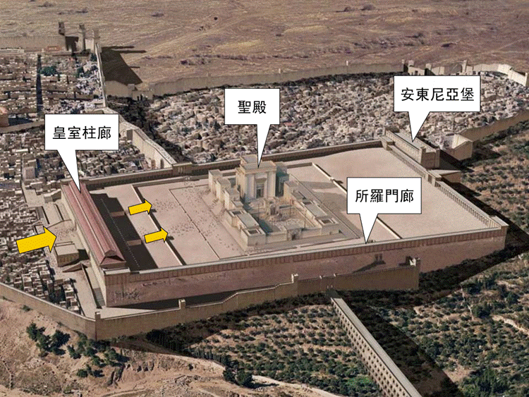
潔淨聖殿 Cleansing Temple
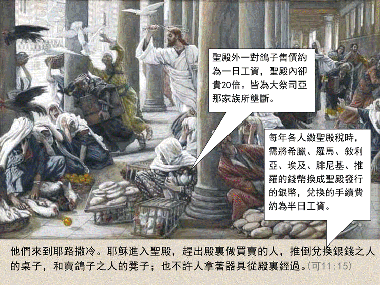
潔淨聖殿 Cleansing Temple
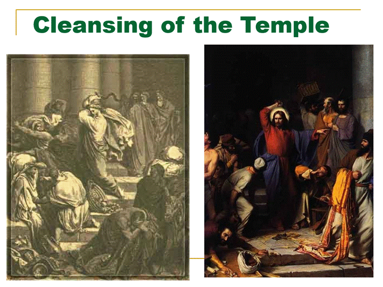
★
★nt_57_CHÚA DỌN SẠCH VÀ TRẬT TỰ LẠI ĐỀN THỜ 潔淨整頓聖殿
https://www.youtube.com/watch?v=SorvR8X3vYU
★nt_57_30. Gần đến Lễ Vượt Qua 30. 逾越節快到了 1
{kind=link}
★nt_57_30. Gần đến Lễ Vượt Qua 30. 逾越節快到了 2
{kind=link}
58．最後晚餐 Last Supper 58 . bữa ăn tối cuối cùng
|
58．最後晚餐 |
Last Supper |
Do the action as breaking a bread |
58 . bữa ăn tối cuối cùng |
Một tay giơ hai ngón tay, một tay vung roi |
太 Mat Ma-thi-ơ 26:26-28 |
★nt_58_YÊU ĐẾN CÙNG (Ga 13,1-15) 愛到最後 （約翰福音 13:1）
http://gpbanmethuot.com/loi-chua-moi-ngay/thu-nam-tuan-thanh-54640.html
Trước lễ Vượt Qua, Đức Giê-su biết giờ của Người đã đến, giờ phải bỏ thế gian mà về với Chúa Cha. Người vẫn yêu thương những kẻ thuộc về mình còn ở thế gian, và Người yêu thương họ đến cùng. (Ga 13,1)
在逾越節之前，耶穌知道祂的時候到了，離開這個世界回到天父身邊的時候了。他仍然愛他還在地上的人，並且他愛他們到底。（約翰福音 13:1）
Washing the Disciples' Feet .耶穌洗門徒的腳 (太23:6-12; 10:24, 40)
馬太福音第廿六章17-35節 在逾越節筵席中設立聖餐
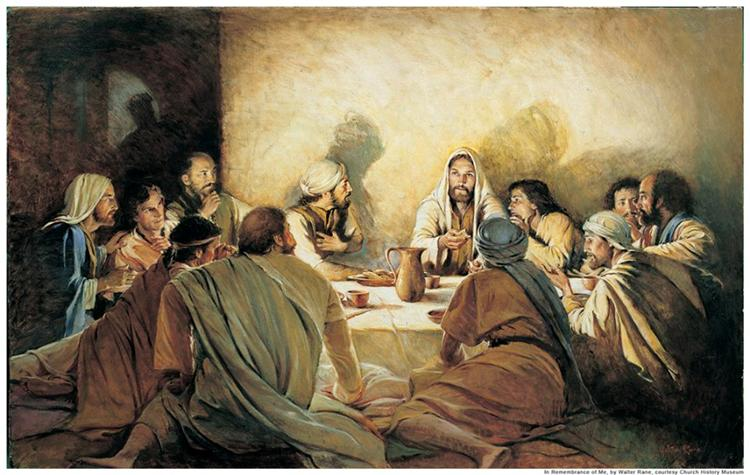
在逾越節筵席中設立聖餐 ◎黃濠光牧師
「因為這是我立約的血，為多人流出來，使罪得赦。」（28）
★
★nt_58_Bữa ăn tối cuối cùng, 最后的晚餐
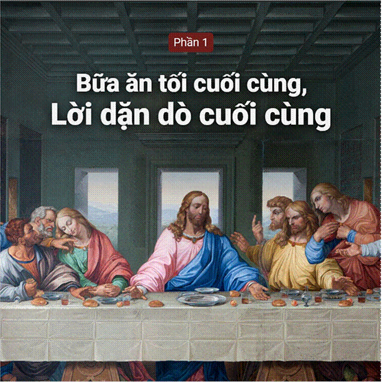
最後一週
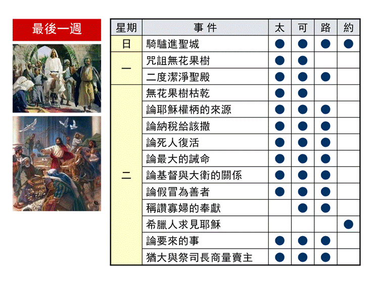
★nt_58_31. Bữa tiệc chia ly 31. 最後晚餐 1
{kind=link}
★nt_58_31. Bữa tiệc chia ly 31. 最後晚餐 2
{kind=link}
59．被抓被打 Caught and Beaten 59 . Bị bắt và bị đánh
|
59．被抓被打 |
Caught and Beaten |
Two hands as tie together |
59 . Bị bắt và bị đánh |
Thực hiện động tác xé bánh mì |
可 Mak Mác 14:44-46 |
★＞Vua Herod trong câu chuyện Chúa Jesus giáng sinh | Nhân vật trong KINH THÁNH 誕生故事中的希律王 |聖經中的人物
https://www.youtube.com/watch?v=IEUlhazrT1g&list=PL6O4kgM3EtFdyrvGQzKJEUuSrAo9S2wBn&index=8
nt_59_馬太福音第廿六章47-56節 耶穌被捕
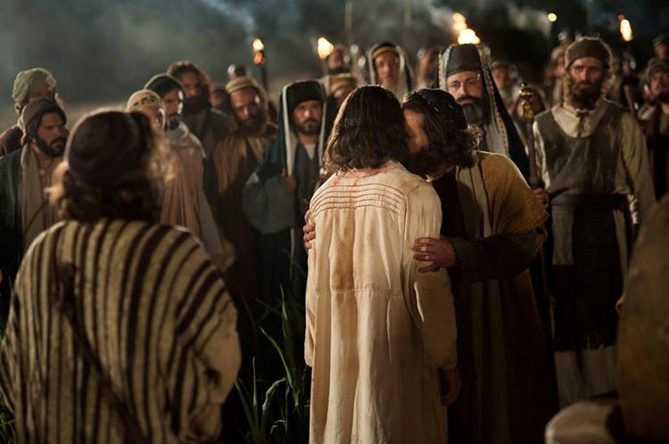
耶穌被捕 ◎黃濠光牧師
「耶穌對他說：『朋友，你來要做的事，就做吧。』於是那些人上前，下手拿住耶穌。」（50）
馬太福音第廿七章11-26節 彼拉多審問耶穌
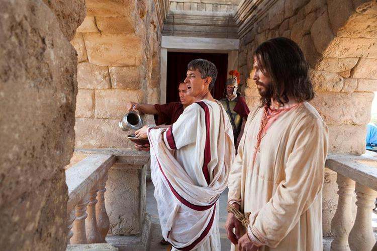
彼拉多審問耶穌 ◎黃濠光牧師
「耶穌站在巡撫面前；巡撫問他說：『你是猶太人的王嗎？』耶穌說：『你說的是。』」（11）
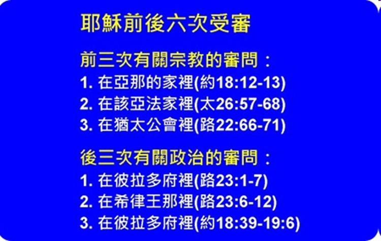
Jesus’ Six Trials
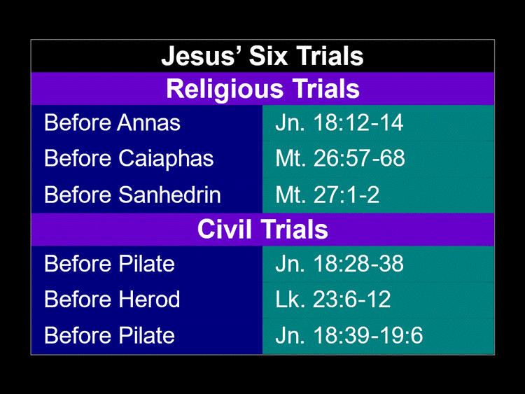
約翰福音第十九章1-16節 耶穌受鞭打及判刑
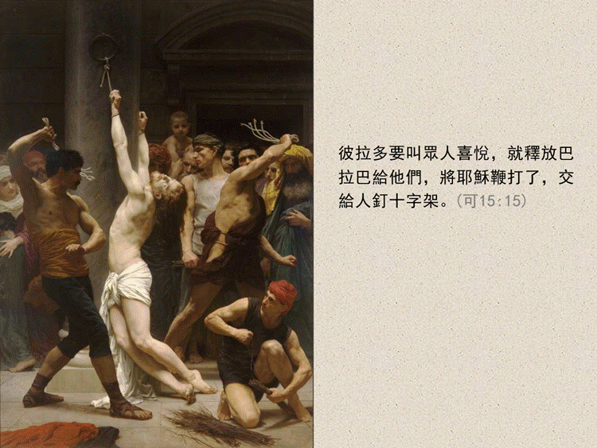
耶穌受鞭打及判刑 ◎黃濠光牧師
「耶穌回答說：『若不是從上頭賜給你的，你就毫無權柄辦我。所以，把我交給你的那人罪更重了。』」（11）
★nt_59_MẦU NHIỆM THƯƠNG 耶稣遭受打击
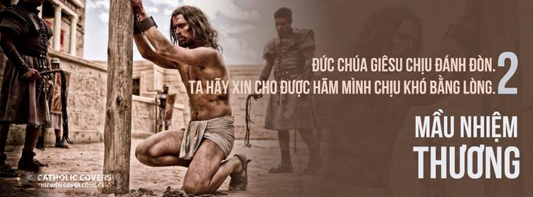
https://www.facebook.com/photo.php?fbid=541626316169650&id=171210499877902&set=a.171228929876059
ĐỨC CHÚA GIÊSU CHỊU ĐÁNH ĐÒN.
TA HÃY XIN CHO ĐƯỢC HÃM MÌNH CHỊU KHÓ BẰNG LÒNG.
耶稣遭受打击。让我们请求他承受苦难吧。
★nt_59_32. Chúa Jesus bị bắt 32. 耶穌被捕 1
{kind=link}
★nt_59_32. Chúa Jesus bị bắt 32. 耶穌被捕 2
{kind=link}
★nt_59_33. Chúa Jesus trước công nghị 33. 耶穌在公會面前 1
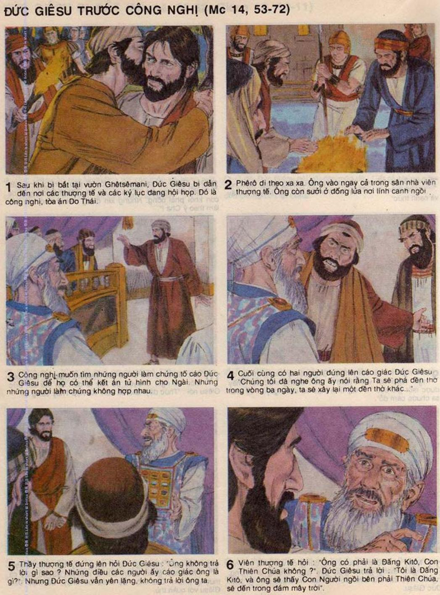
★nt_59_33. Chúa Jesus trước công nghị 33. 耶穌在公會面前 2
{kind=link}
★nt_59_34. Chúa Jesus trước tòa Phitato 34. 耶穌在彼拉多宮廷前
{kind=link}
{kind=link}
60．彼得否認 Peter denies 60 . Phi-e-rơ phủ nhận
|
60．彼得否認 |
Peter denies |
With hand cover face, the head move to other side |
60 . Phi-e-rơ phủ nhận |
Tay như bị trói |
太 Mat Ma-thi-ơ 26:74-75 |
馬可福音第十四章66-72節 彼得三次不認主
彼得三次不認主 ◎黃濠光牧師
「立時雞叫了第二遍。彼得想起耶穌對他所說的話：『雞叫兩遍以先，你要三次不認我。』思想起來，就哭了。」（72）
Peter's Denial .彼得三次不認主 (太26:69-75)
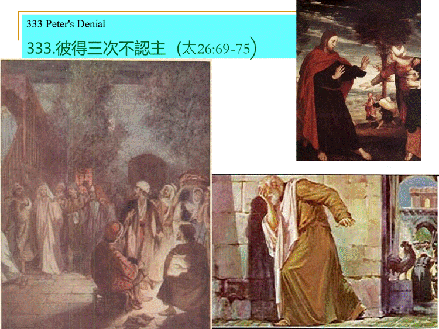
★nt_60_ “Chúa Giê-su quay đầu nhìn Phi-e-rơ” 耶稣转过头来看着彼得。
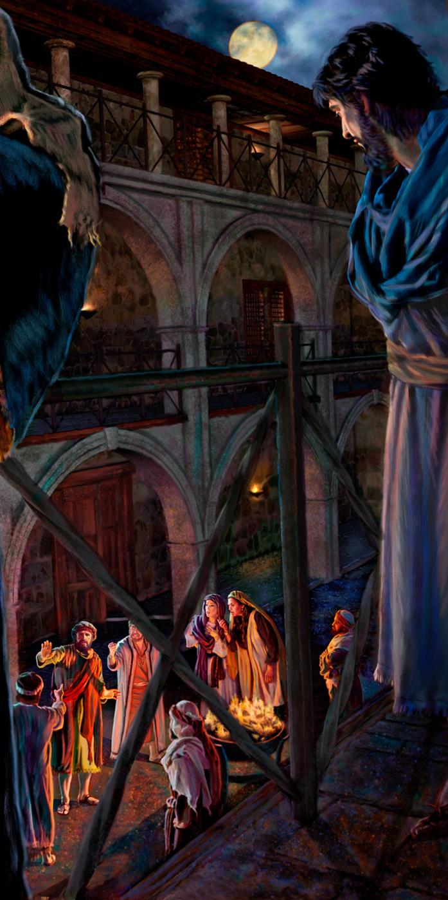
https://www.jw.org/vi/thu-vien/sach/duc-tin-that/phiero-hoc-ve-tha-thu/
★38. Chúa Giê-su Bị Phản Bội 38. 耶穌遭到背叛
Hàng năm, người Do Thái tổ chức Lễ Vượt Qua để ăn mừng vì Đức Chúa Trời đã giải cứu tổ tiên họ khỏi kiếp nô lệ tại xứ Ai-cập hàng thế kỷ trước. Khoảng ba năm sau khi Đức Chúa Giê-su bắt đầu chức vụ giảng dạy công khai, Ngài nói với các môn đồ của mình rằng Ngài muốn cùng họ tổ chức Lễ Vượt Qua tại Giê-ru-sa-lem, và Ngài sẽ bị giết ở đó.
每年，猶太人都守逾越節。這是為了紀念在幾個世紀前上帝如何將他們的祖宗從埃及為奴之地帶出來。大約三年前，耶穌開始公開傳道和教學，耶穌對他的門徒說，祂想和他們一起在耶路撒冷慶祝這逾越節，並且祂將在那裡被殺。
Giu-đa, một trong các môn đồ của Chúa Giê-su làm thủ quỹ giữ tiền, nhưng anh ta là người tham tiền và thường ăn cắp tiền quỹ. Sau khi Chúa Giê-su và các môn đồ đến thành Giê-ru-sa-lem, Giu-đa tìm đến các nhà lãnh đạo Do Thái và bày mưu phản Ngài để lấy ít tiền. Hắn biết các nhà lãnh đạo Do Thái chối bỏ Chúa Giê-su là Đấng Mê-si và họ đang tìm cách giết Ngài.
耶穌的門徒中有一個人名叫猶大，他負責管理使徒們的錢袋，但他很愛錢，常偷袋子里的錢。耶穌和門徒們到達耶路撒冷後，猶大去了猶太人首領那裡，以背叛耶穌來換取金錢。他知道猶太首領不承認耶穌就是彌賽亞，他們要密謀殺害祂。
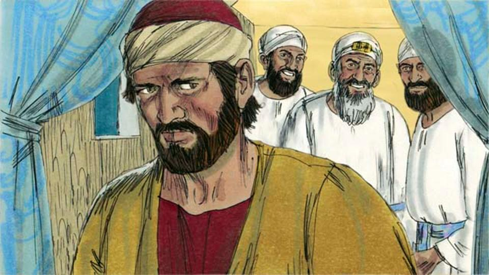
Các nhà lãnh đạo Do Thái dưới sự hướng dẫn của thầy tế lễ thượng phẩm đã trả cho Giu-đa ba mươi đồng bạc để hắn phản bội Chúa Giê-su. Điều này xảy ra giống như những gì các đấng tiên tri đã báo trước. Giu-đa đồng ý lấy số tiền được trả, và rời đi. Hắn bắt đầu tìm cơ hội để giúp họ bắt Chúa Giê-su.
那些猶太人的首領們，領頭的是大祭司，他們給了猶大30塊銀子，讓他背叛耶穌。這正如先知們所預言的。猶大同意了，拿了錢離開，尋找機會幫助他們逮捕耶穌。
Chúa Giê-su và các môn đồ của Ngài tổ chức Lễ Vượt Qua tại Giê-ru-sa-lem. Trong khi dự Lễ Vượt Qua, Chúa Giê-su lấy bánh bẻ ra mà phán rằng: “Hãy nhận và ăn đi. Đây là thân thể Ta đã vì các con mà phó cho. Hãy làm điều này để nhớ tới Ta.” Bằng cách này, Chúa Giê-su phán rằng thân thể của Ngài sẽ là của lễ chuộc tội cho họ.
在耶路撒冷，耶穌和他的門徒們守逾越節。他們在吃逾越節宴席的時候，耶穌拿起餅來，掰開了，說："拿著吃，這是我的身體，為你們捨的。你們要這樣做，以此來紀念我」 。 耶穌以這種方式說祂的身體要為他們犧牲。
Sau đó, Chúa Giê-su cầm chén và phán rằng: “Hãy uống đi. Đây là huyết của Giao Ước mới đổ ra để tha thứ tội lỗi. Hãy làm điều này để nhớ đến Ta mỗi khi các con uống.”
接著耶穌拿起一個杯子，說：「喝這個。這是我立新約的血，為赦罪所流的。你們每次喝的時候以此來紀念我。」
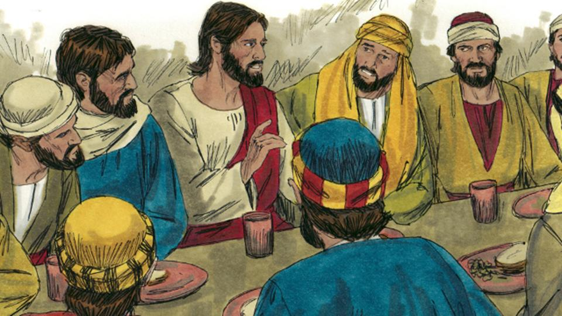
Ngài nói với các môn đồ: “Một người trong số các con sẽ phản bội Ta.” Các môn đồ cảm thấy bị sốc khi nghe Đức Chúa Giê-su nói những lời này và hỏi ai là người sẽ làm điều đó. Chúa Giê-su trả lời: “Người nào mà Ta đưa miếng bánh này sẽ là người phản bội Ta.” Rồi Ngài đưa miếng bánh cho Giu-đa.
耶穌對門徒說：「你們中有一人要背叛我。」門徒都很震驚，問誰會這麼做。耶穌說：「我把這餅給誰，他就是那個背叛我的人。」接著祂就將餅給了猶大。
Sau khi Giu-đa lấy miếng bánh, Sa-tan liền nhập vào hắn. Giu-đa rời đi và đến cùng các nhà lãnh đạo Do Thái để giúp họ bắt Chúa Giê-su. Lúc đó, trời đã nửa đêm.
當猶大拿到餅後，撒但就入了他的心。猶大離開去幫助猶太人首領逮捕耶穌。那時候是夜間。
Sau buổi tiệc, Chúa Giê-su và các môn đồ Ngài đi lên núi Ô-li-ve. Ngài phán: “Đêm nay, các con sẽ bỏ Ta. Như có lời đã chép: ‘Ta sẽ đánh kẻ chăn chiên và tất cả con chiên đều sẽ bị tản lạc.’”
用完餐後，耶穌和他的門徒往橄欖山走去。耶穌說：「今晚你們所有人都要離棄我。因為經上記著說：‘我要擊打牧人，羊就分散了。’ 」
Phi-e-rơ trả lời rằng: “Dù cho tất cả mọi người bỏ Thầy, con cũng sẽ không bỏ thầy đâu.” Chúa Giê-su nói với Phi-e-rơ: “Phi-e-rơ à, Sa-tan muốn cướp lấy tất cả các con nhưng Ta cầu nguyện cho đức tin của các con không bị vấp ngã. Mặc dù vậy, tối nay trước khi gà gáy, con sẽ chối Ta ba lần rằng con không biết Ta.”
彼得回答說：「即使所有人都離棄你，我也不會！」耶穌對彼得說：「撒旦想要奪取你們所有人，但我已經為你禱告了，彼得，你的信心必不跌倒。即便如此，今晚，雞叫以前，你要三次不認我。」
Phi-e-rơ trả lời Chúa Giê-su: “Dù phải chết, con cũng sẽ không bao giờ chối bỏ Thầy.” Và tất cả các môn đồ khác đều nói như vậy.
彼得對耶穌說：「即使我必須死，我也永遠不會不認你！」其他的門徒也都這樣說。
Sau đó Chúa Giê-su cùng các môn đồ của mình đi đến một nơi gọi là Ghết-sê-ma-nê. Chúa Giê-su bảo các môn đồ cầu nguyện để họ không bị sa vào cám dỗ. Rồi Ngài đi cầu nguyện một mình.
然後耶穌和他的門徒來到一個地方，名叫客西馬尼園。耶穌告訴他的門徒要禱告，以免落入誘惑中。接著耶穌就獨自去禱告了。
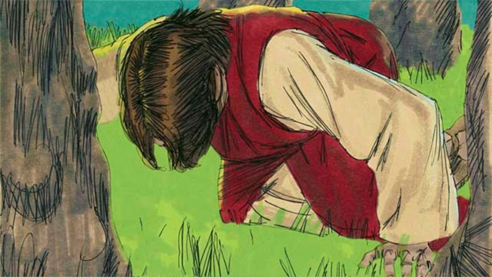
Chúa Giê-su cầu nguyện ba lần: “Lạy Cha, nếu có thể được, xin cất chén đau thương này khỏi con. Nhưng nếu không còn cách nào khác để tội lỗi của nhân loại được tha, thì xin ý Cha được nên.” Chúa Giê-su rất sầu não và mồ hôi của Ngài đổ ra giống như những giọt máu. Đức Chúa Trời sai một thiên sứ đến thêm sức cho Ngài.
耶穌禱告了三次：「父啊，如果可以，請求你不要讓我喝這個苦杯。但如果沒有其它方法可以讓人的罪得赦免，就讓你的旨意得到成全。」耶穌非常痛苦，祂的汗如血滴一樣。上帝派了一個天使去剛強祂。
Cứ sau mỗi lần cầu nguyện, Chúa Giê-su trở lại cùng các môn đồ thì đều thấy họ đang ngủ. Sau lần thứ ba quay trở lại, Chúa Giê-su phán: “Hãy dậy đi! Kẻ phản Ta đã đến.”
每次禱告後，耶穌回到門徒那裡，但他們都在睡覺。當祂第三次回來時，耶穌說：「醒醒吧！背叛我的人到了。」
Giu-đa đến cùng với các nhà lãnh đạo Do Thái, quân lính, và một đám đông. Họ mang theo gươm và gậy. Giu-đa đến bên Chúa Giê-su và nói: “Chào Thầy!” và hôn Ngài. Nụ hôn là dấu hiệu cho các nhà lãnh đạo Do Thái biết đó là người phải bắt. Sau đó, Chúa Giê-su nói: “Giu-đa, con phản bội Ta với một nụ hôn sao?”
猶大來了，帶著猶太人的首領、士兵和一大群人，他們拿著刀棒。猶大來到耶穌面前說：「你好，老師」，並且親吻他。這就是暗號，好讓猶太人首領知道要逮捕誰。耶穌說：「猶大，你用一個吻背叛了我？」
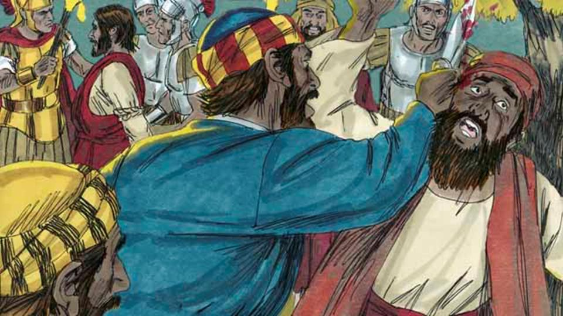
Sau khi quân lính bắt Chúa Giê-su, Phi-e-rơ rút gươm của mình và chém đứt tai một người đầy tớ của thầy tế lễ thượng phẩm. Chúa Giê-su nói với Phi-e-rơ: “Hãy cất gươm đi! Ta có thể xin Cha Ta sai một đạo binh thiên sứ tới để bảo vệ Ta. Nhưng Ta phải vâng phục Cha Ta.” Sau đó, Chúa Giê-su chữa lành tai cho người đầy tớ bị chém. Sau khi Chúa Giê-su bị bắt, tất cả các môn đồ đều chạy trốn.
當士兵們逮捕了耶穌的時候，彼得拔出刀，割下了大祭司的一個僕人的耳朵。耶穌說：「把刀收起來！我本可以讓我的父派天使來保護我。但我必須要順服我的父。」然後，耶穌治好了那人的耳朵。耶穌被捕後，所有的門徒都跑了。
Câu chuyện Kinh Thánh được trích từ: Ma-thi-ơ 26:14-56; Mác 14:10-50; Lu-ca 22:1-53; Giăng 12:6; 18:1-11
本聖經故事來源: 馬太福音26:14-56; 馬可福音14:10-50; 路加福音 22:1-53; 約翰福音 18:1-11
61．釘十字架 Nailed to the Cross 61 . Đóng đinh trên thập giá
|
61．釘十字架 |
Nailed to the Cross |
With two hand stretch, as a cross |
61 . Đóng đinh trên thập giá |
Dùng tay che mặt và quay đầu sang một bên |
约19:17-18 |
馬太福音第廿七章57-66節 安葬耶穌
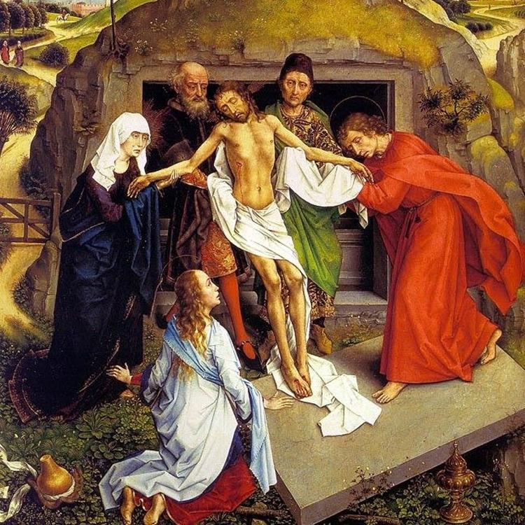
安葬耶穌 ◎黃濠光牧師
「約瑟取了身體，用乾淨細麻布裹好，」（59）
苦路 Via Dolorosa
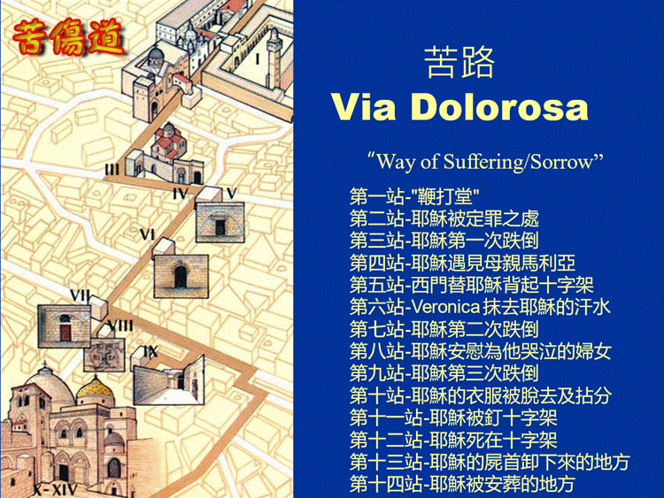
約翰福音第十九章17-30節 耶穌釘十字架的細節
耶穌釘十字架的細節 ◎黃濠光牧師
「耶穌嘗（原文作受）了那醋，就說：『成了！』便低下頭，將靈魂交付神了。」（30）
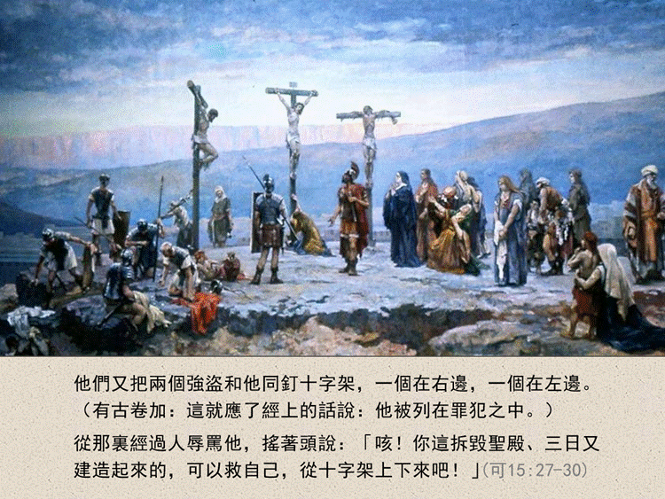
基督的死不僅是代死，也是包羅萬有的死
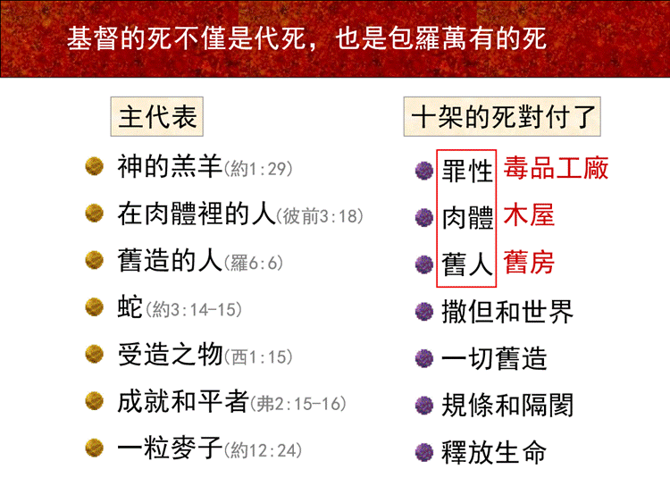
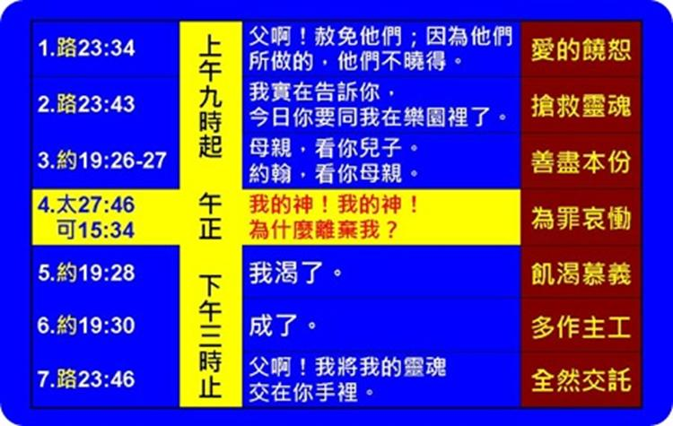
★nt_61_Thi thể Chúa Giê-su được liệm và đem chôn 耶穌的屍體被包裹並埋葬
★nt_61_耶穌受難日 Thứ sáu tốt lành
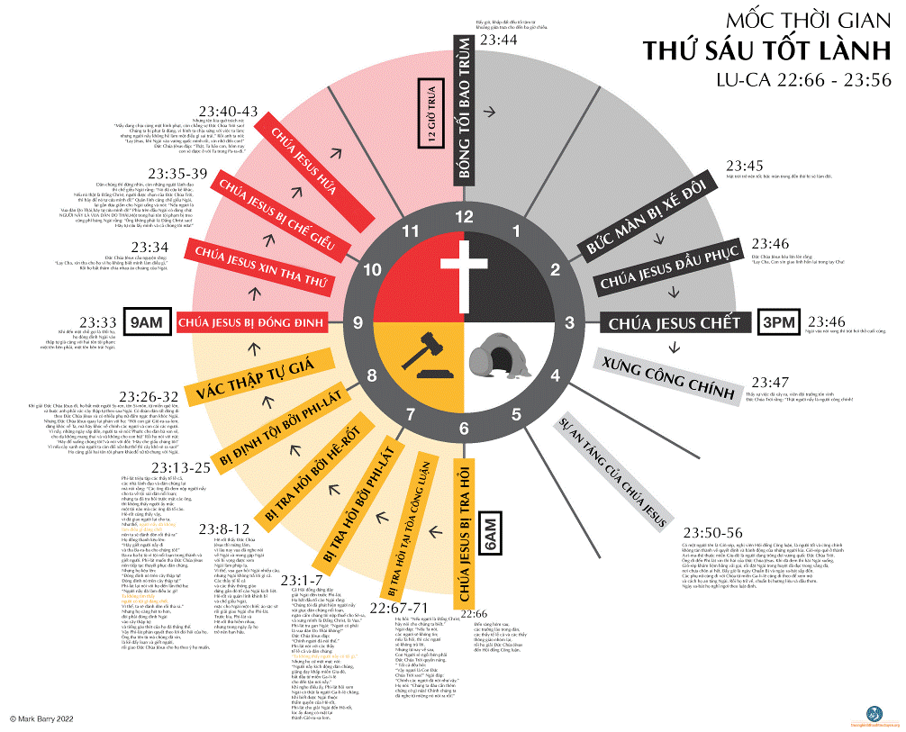
http://www.truongkinhthanhtructuyen.org/vb/thu-sau-tot-lanh#
★nt_61_耶穌在十字架上的時候 Thời gian Chúa Jesus trên thập tự giá
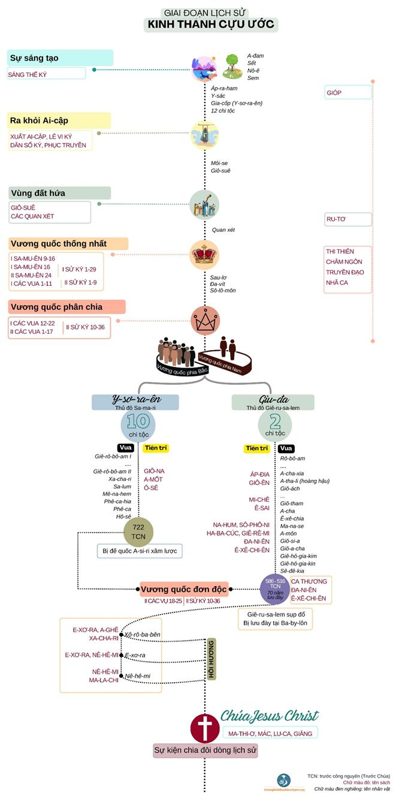
★nt_61_35. Đóng đinh Chúa Jesus 35. 耶穌被釘十字架
{kind=link}
{kind=link}
62．三天後復活 Resurrected in three days 62 . Phục sinh sau ba ngày
|
62．三天後復活 |
Resurrected in three days |
With two hands hold in the chest, draw down, and rise up again, with two hand rise up |
62 . Phục sinh sau ba ngày |
Giơ tay ra hai bên, giống như bị đóng đinh |
太 Mat Ma-thi-ơ 28:5-7 |
約翰福音第二十章1-10節 耶穌復活
耶穌復活 ◎黃濠光牧師
「（因為他們還不明白聖經的意思，就是耶穌必要從死裡復活。）」（9）
馬太福音第廿八章 耶穌復活及頒布大使命
耶穌復活及頒布大使命 ◎黃濠光牧師
「耶穌進前來，對他們說：「天上地下所有的權柄都賜給我了。所以，你們要去，使萬民作我的門徒，奉父、子、聖靈的名給他們施洗（或作：給他們施洗，歸於父、子、聖靈的名）。凡我所吩咐你們的，都教訓他們遵守，我就常與你們同在，直到世界的末了。」（18-20）
★nt_62_Chúa Giê-su được sống lại 耶穌復活了
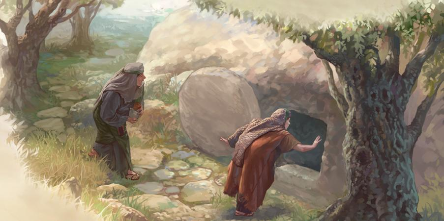
★nt_62_36. Chúa Jesus sống lại 36. 耶穌復活了
{kind=link}
{kind=link}
63．五百多證人 500 Witnesses 63 . Hơn năm trăm nhân chứng
|
63．五百多證人 |
500 Witnesses |
Rise five finger |
63 . Hơn năm trăm nhân chứng |
Giữ hai tay trước ngực, ngồi xổm xuống, đứng dậy lần nữa và giơ cao hai tay |
林前15:5-8 林前15:14、17 |
約翰福音第二十章11-18節 耶穌復活後向門徒顯現
耶穌復活後向門徒顯現 ◎黃濠光牧師
「耶穌說：『不要摸我，因我還沒有升上去見我的父。你往我弟兄那裡去，告訴他們說，我要升上去見我的父，也是你們的父，見我的神，也是你們的神。』」（17）
有兩個人往鄉下去。走路的時候，耶穌變了形像，向他們顯現。
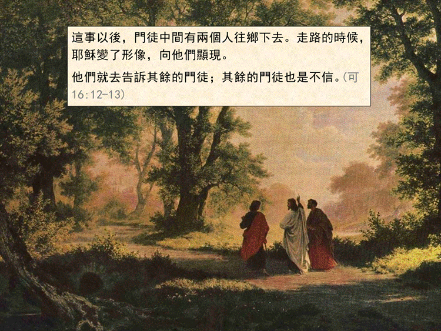
這事以後，門徒中間有兩個人往鄉下去。走路的時候，耶穌變了形像，向他們顯現。
他們就去告訴其餘的門徒；其餘的門徒也是不信。(可16:12-13)
約翰福音第二十章19-31節 耶穌復活的形體
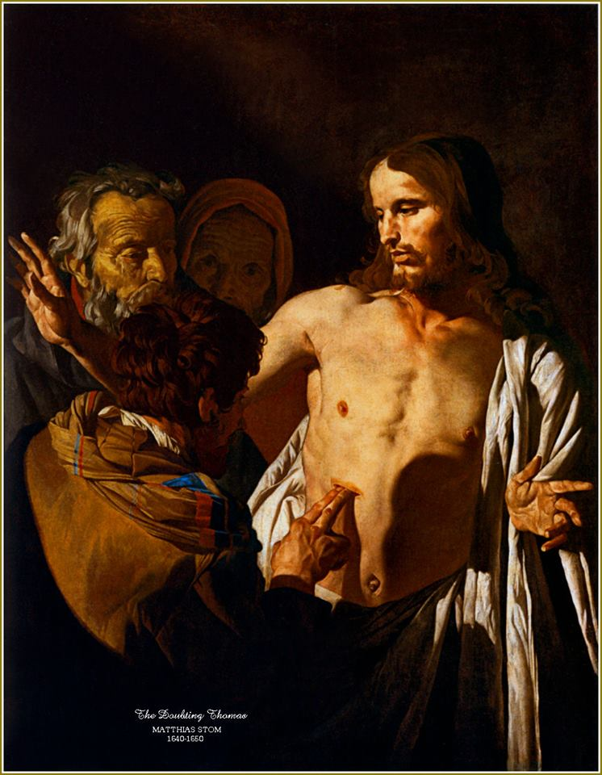
耶穌復活的形體 ◎黃濠光牧師
「但記這些事要叫你們信耶穌是基督，是神的兒子，並且叫你們信了他，就可以因他的名得生命。」（31）
約翰福音第廿一章1-14節 耶穌在加利利海邊向門徒顯現
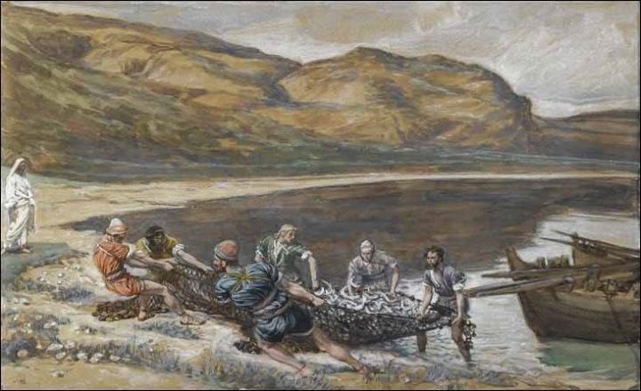
耶穌在加利利海邊向門徒顯現 ◎黃濠光牧師
「耶穌就來拿餅和魚給他們。」（13）
★nt_63_CHỨNG NHÂN PHỤC SINH (Ga 21,1-9) 復活見證人 (約翰福音 21:1-9)
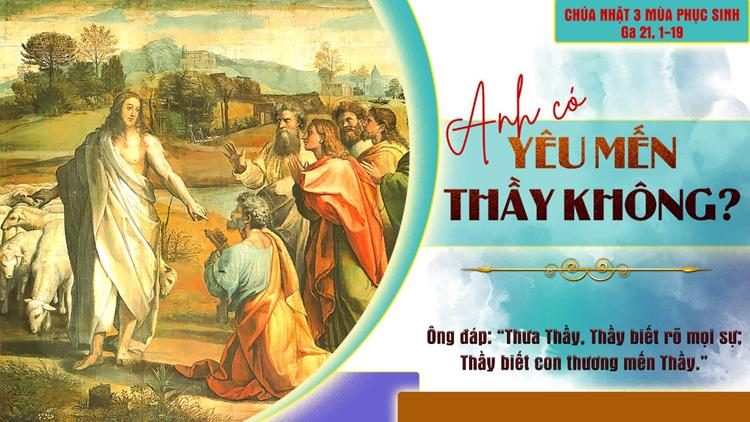
https://legiomariaevn.com/chi-tiet-tin-tuc/1799/suy-niem-chua-nhat-iii-phuc-sinh-c-2022.html
★nt_63_37. Trên đường Emmau 37. 在前往以馬忤斯的路上 1
{kind=link}
★nt_63_37. Trên đường Emmau 37. 在前往以馬忤斯的路上 2
{kind=link}
64．聖子升天 Son of God ascended to heaven 64 . Sự thăng thiên của Đức
總結
總結本課的關鍵教導。
教學影片
觀看本課的教學影片，深入了解內容。
課後作業
作業1：閱讀與反思
閱讀相關經文，寫下200-300字反思。
作業2：經文記憶
背誦一節經文並分享其應用。